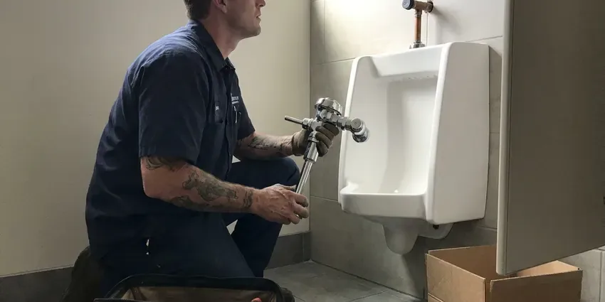

Toilet Repair in Hartford, CT
Don't let a broken toilet disrupt your Hartford, CT home. Our team offers fast and effective toilet repair services, handling all common issues.
- Fast Local Service
- Licensed Plumbers
- Guaranteed Work
- Guaranteed Repairs
Your Local Source for Toilet Repair in Hartford, CT.
Don't let a faulty toilet disrupt your home, contact GLV Plumbing for immediate assistance.
Expert Toilet Repair Services Across Hartford, CT
When your toilet acts up in Hartford, CT, GLV Plumbing is ready to help. We understand the inconvenience and potential water waste a malfunctioning toilet can cause, which is why we offer efficient repair services designed to restore full function quickly.
Our expertise includes:
- Repairing leaking toilet tanks and bowls
- Clear tough toilet clogs quickly.
- Diagnosing and fixing phantom flushes

Additional Bathroom Plumbing Services in Hartford, CT
From toilets to showers, our bathroom plumbing team in Hartford, CT repairs, installs, and replaces every fixture with clean, code-compliant work.


Customers
Why Choose GLV Plumbing for Toilet Repair in Hartford, CT?
We treat a toilet repair as a diagnosis, not a guess, so we check every part that could be wasting water. That keeps you from paying for a second visit when the first fix only treated a symptom.
- Clear Pricing, You approve a flat price before we pick up a wrench.
- Local Expertise, Our team knows the specific plumbing challenges faced by homes in Hartford, CT.
- Accurate Diagnosis, Our plumbers use specialized tools to pinpoint the exact cause of your toilet's malfunction, from worn-out flappers to blocked trapways.
Citywide Coverage
Whether you live near downtown Hartford or out on the edge of town, we can usually schedule toilet repair the same day. We bring the same stocked truck and the same flat-rate pricing to every neighborhood.
Experienced Team
Our plumbing team has extensive experience with the common toilet issues homeowners face, including problems related to hard water and older plumbing systems. We are regularly trained on the latest repair techniques and toilet technologies.
Safety-First Approach
All toilet repairs performed by GLV Plumbing adhere strictly to local plumbing codes and safety standards in Hartford, CT. We ensure proper water shut-off procedures and secure connections to prevent leaks.
Trusted Certified Hartford Plumbing Services Professionals
At GLV Plumbing, we take pride in providing licensed, certified plumbing services throughout Hartford, CT. Backed by recognized industry credentials, our experienced plumbers combine technical skill with genuine customer care. Whether it is repair, installation, or maintenance, we follow strict safety and quality standards to deliver lasting results you can trust.
Call Us Now PHCC Plumbing Contractor Recognition
PHCC Plumbing Contractor Recognition Better Business Bureau (BBB) Accreditation
Better Business Bureau (BBB) Accreditation Angi Certified Pro
Angi Certified Pro ISO 9001 Quality Management Certification
ISO 9001 Quality Management CertificationDependable Toilet Repair Services in Hartford, CT
Weak Flush and Clog Repair in Hartford, CT
If your toilet needs two flushes or clogs often, the problem could be scale in the rim jets, a partial blockage in the trapway or a flush valve that does not open fully. We auger the trap, check the vent if gurgling is present and clean the jets with a descaling treatment. Some low-flow toilets from the 1990s simply flush poorly, and we will tell you honestly if replacement is the better fix.

Pressure-Assist and Dual-Flush Repair in Hartford
Pressure-assist toilets from Sloan Flushmate and dual-flush models from TOTO and American Standard use parts that hardware stores seldom stock. We carry cartridges, flush buttons and seals for the common models and can order specialty parts fast. These systems need correct pressure settings to work well, so we test incoming water pressure as part of the repair.
Emergency Toilet Repair in Hartford, CT
A severely clogged or overflowing toilet can be an emergency, especially in a one-bathroom home or a busy commercial setting. When you have a toilet crisis in Hartford, CT, GLV Plumbing offers rapid response emergency services to prevent water damage and restore functionality. We're equipped to handle urgent issues like severe clogs, burst supply lines, or toilets that won't stop running, bringing immediate relief and lasting repairs.
Toilet Tank and Bowl Crack Repair in Hartford
Cracks in a toilet tank or bowl in Hartford can lead to significant water leakage and require immediate attention. While small hairline cracks might be temporarily sealed, larger or structural cracks often necessitate replacement of the affected component. Our technicians assess the severity of the crack and advise on the most cost-effective and durable solution. We can perform careful tank or bowl replacements, ensuring a watertight seal and proper function, preventing further water damage to your flooring or subfloor.
Running Toilet Fixes in Hartford
A toilet that continually runs or refills itself intermittently is not only annoying but also a major water waste. This issue in Hartford is typically caused by a faulty flapper valve, an improperly adjusted float, a worn-out fill valve, or sediment buildup. Our technicians diagnose the specific component causing the problem and replace it with durable, long-lasting parts. We ensure proper alignment and adjustment of all internal mechanisms to restore your toilet's efficient operation and stop unnecessary water consumption.
Clogged Toilet Clearing in Hartford, CT
Tough toilet clogs are a frequent problem that can bring your bathroom to a halt. While some can be cleared with a plunger, deeper blockages may indicate issues further down the drain line or even in the main sewer line. Our technicians use professional-grade augers and sometimes even camera inspections to pinpoint and remove obstructions effectively. We handle everything from foreign objects to excessive toilet paper, ensuring your toilet drains freely again.
Running Toilet Repair in Hartford
A running toilet is not just annoying, it can waste hundreds of gallons of water a day, leading to significantly higher water bills. This common issue is usually caused by a faulty flapper, a misaligned fill valve, or an improperly adjusted float. Our plumbers quickly identify the exact cause, whether it's mineral buildup from hard water affecting the flapper seal or a worn-out component, and replace the necessary parts to stop the continuous flow and restore efficiency.

Toilet Gasket and Seal Replacement in Hartford, CT
The gaskets and seals within your toilet tank and at its base are crucial for preventing leaks. Over time, these rubber components can degrade, crack, or become brittle due to age and exposure to water, especially where the water is hard. We focus on replacing worn-out flapper seals, tank-to-bowl gaskets, and the wax ring at the toilet's base, which is essential for preventing leaks onto your bathroom floor and maintaining a watertight seal.
Toilet Repair Near Me in Hartford, CT
When you search for toilet repair near me, you want a plumber who shows up with the right parts and a fair price. GLV Plumbing keeps trucks stocked for the toilets most common in Hartford homes. That means most repairs are done in a single visit.
When you search for 'toilet repair near me' in Hartford, CT, you want a local, dependable plumber who can arrive quickly. GLV Plumbing is your community's trusted plumbing service, with technicians located to provide fast response times.
GLV Plumbing at a Glance
- Licensed and insured plumbers serving Hartford, CT
- Same-day appointments and 24/7 emergency response
- Upfront, flat-rate pricing before work begins
- 4.8-star rated by 946+ Connecticut customers
Hartford Map
Hartford Information
- Population
- 119,669
- Area codes
- 860/959/475
- Service area
- Hartford and communities within 40 miles
- Nearby
- West Hartford, East Hartford, New Britain, Bristol
Toilets in Hartford homes can run into wax ring failures or mineral buildup on internal parts over time. A large share of homes in Connecticut use private wells, which can be acidic or carry iron, manganese, or radon that call for treatment. That is why prompt and effective repair is so important.
Expert Services
Trust our professionals for reliable GLV Plumbing solutions in Hartford, CT.
Our Specialized Plumbing Services in Hartford, CT
At GLV Plumbing, we provide a complete range of plumbing services across Hartford, CT. From leak detection to full system installations, our team ensures fast, precise, and affordable service for both residential and commercial properties. Explore our core services below:


How Our Toilet Repair Process Works in Hartford, CT
Our toilet repair process in Hartford, CT is designed for efficiency and transparency, giving you a smooth experience from start to finish.
Request a Quote
Contact GLV Plumbing by calling (860) 487-7330 or filling out our online form to schedule your toilet repair service. We'll gather initial details about your issue.
Diagnosis & Estimate
A certified plumber will arrive at your Hartford home, thoroughly inspect your toilet, diagnose the problem, and provide a clear, upfront estimate for the repair.
Expert Repair
Once approved, our technician will proceed with the repair using quality parts and proven techniques, restoring your toilet's full function efficiently and cleanly.
Frequently Asked Questions About Toilet Repair in Hartford
The cost of toilet repair in Hartford, CT can vary widely depending on the issue. Minor repairs like replacing a flapper might range from $100 to $250, while more complex issues such as a new fill valve or wax ring replacement could be $200 to $400. Severe clogs requiring professional augering might fall in the $150 to $350 range. We provide a detailed estimate after diagnosing the problem.
Absolutely. A constantly running toilet can silently waste hundreds, if not thousands, of gallons of water per month. Even a small leak can add up quickly on your water bill over time, making prompt repair a wise financial decision.
We service all major toilet brands, including but not limited to American Standard, Kohler, Toto, Delta, Gerber, and Mansfield. Our plumbers are equipped with a wide range of common replacement parts and have experience with various models and flush systems.
Common signs include a toilet that runs nonstop, a weak or incomplete flush, water leaking around the base, a rocking or unstable bowl, or a visible crack in the porcelain. Any unusual noises, like gurgling or whistling, can also point to an internal issue that needs attention.
The most common causes are a worn flapper, a mineral-crusted flush valve seat or a fill valve set too high so water spills into the overflow tube. A chain that is too short can also hold the flapper open. A quick inspection typically pinpoints the cause in minutes.
If your toilet is overflowing, right away reach behind the toilet and turn the small valve on the water supply line clockwise to shut off the water. This will stop the water from continuously filling the bowl. Then, try to clear any visible blockage with a plunger and call a professional plumber like GLV Plumbing for assistance.
While some minor running toilet issues, like a simple flapper adjustment, can be DIY, more complex problems may require a professional. If you're unsure about the cause, or if the issue persists after basic troubleshooting, calling GLV Plumbing ensures an accurate diagnosis and lasting repair, preventing potential water waste or damage.
Weak flushing can be caused by several issues, including insufficient water in the tank, a clogged rim jet, a partially closed stop valve, or a partial clog in the drain line. Our plumbers can diagnose the precise cause and restore full flushing power.
What People Are Saying About Our Plumbing Experts?

Robert G.
The trenchless sewer replacement saved our front yard. They walked us through the camera inspection footage first so we knew exactly what we were paying for.
Sewer Line Replacement · East Hartford, CT
Mark T.
When our office needed drain cleaning, GLV Plumbing provided quick, reliable service. The plumber arrived on time and made sure every drain flowed perfectly before leaving. Very satisfied.
Drain Cleaning · New Britain, CTJames P.
Our commercial plumbing system had a leak under the sink, and GLV Plumbing handled it professionally. The plumbers arrived quickly and restored everything without disruption to our customers.
Commercial Plumbing · New Britain, CT
Daniel K.
A pipe burst at 11 pm and they actually answered. The plumber showed up within the hour, shut everything down, and had us back to normal the next morning. Could not ask for more.
Emergency Plumbing · Hartford, CT
Patricia H.
We had a slab leak that two other companies could not find. GLV Plumbing located it in under an hour, explained our options, and the price matched the quote to the dollar.
Slab Leak Repair · Bristol, CT
Laura S.
I scheduled a water heater replacement, and the team made the process smooth and affordable. The new unit works perfectly, and they cleaned up after completing the job.
Water Heater Replacement · East Hartford, CT